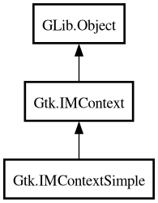

IMContextSimple
Object Hierarchy:

Description:
[
CCode ( type_id =
"gtk_im_context_simple_get_type ()" ) ]
public class IMContextSimple :
IMContext
Content:
Creation methods:
Methods:
Inherited Members:
All known members inherited from class Gtk.IMContext
All known members inherited from class GLib.Object